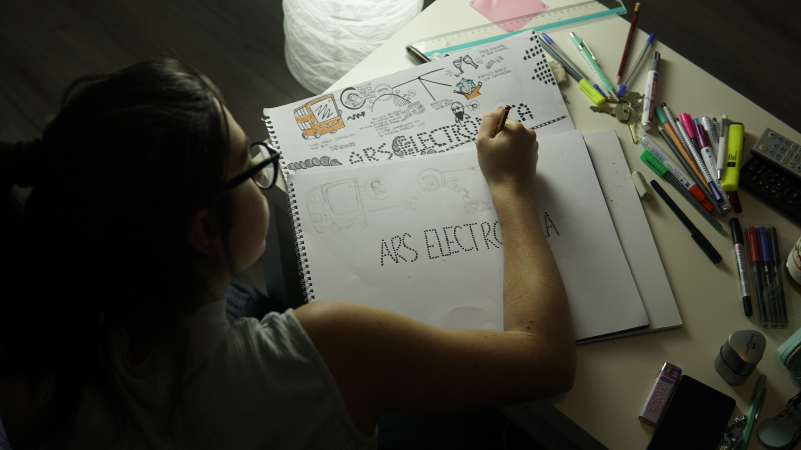

CHILDHOOD
I was born in a small town named Arzignano in Italy on Februrary 4th, 1994 and I was raised on the Northern East-Coast of Italy, between Verona and Venice. Both my parents were born in the same place and despite their desire to move elsewhere, they decided not to go live far away from their families.
I’ve lived my first 18 years of life in Lonigo, a small Italian village famous for wine farms, immense grasslands and folkloristic markets. However, only five years ago I left my hometown to make my travel dreams come true. Since then, I moved from place to place through Oceania, South-East Asia and Europe, throwing myself into a long-term journey that boosted my curiosity towards new cultures and completely altered my way of thinking.
When I was little, I used to be an extroverted child, very active and open to discover new things. However, I’ve also enjoyed spending time by myself playing Nintendo, drawing with watercolours and listening to my father’s favourite music: progressive rock and jazz. This passion for old music grew inside me and became stronger and stronger over the years and I’ll be forever grateful to my father for influencing my music taste, since it motivated me to start playing the transverse flute at the age of 6.
EARLIER EDUCATION
As my desire to discover new cultures was already quite strong at a young age, I decided to enrol at a Linguistic lyceum in Italy so that I could learn modern and ancient languages such as French, English, Spanish, ancient Greek and Latin.
Once I graduated I had to choose between enrolling at a local university or leaving my hometown and start exploring the world.
Of course, I picked the travel option.
I first went to Australia and lived in a van for a few months. I worked in farms and national parks, I spent months exploring the outback, meeting backpackers with different cultural backgrounds and learning new things every day.
Sleeping in disparate locations every night and being so far from my family for such a long time was hard, but I also realised that travelling means going out of the comfort zone, which involves dealing with challenges and learning from failures.
After two years of tropical climate and endless beaches, I moved to England and lived there for one year. I moved then to Canary Island in Spain where I had the chance to improve my Spanish and I finally moved to the land of bulb fields, wonderful windmills and User Experience Design courses, The Netherlands.
WHY UXD IN THUAS
Travelling and discovering new places made me realise that I wanted to learn a job that would allow me to travel and earn money at the same time.
Other than being motivated by the travelling factor, I was looking forward to starting a career in the art industry since I have a genuine passion for art galleries and I enjoy spending time discovering new artists and checking out their artworks (painting, 3d render, audiovisual installation).
I chose to apply for this specific course because I like the idea that technology needs to be accessible to everyone. Moreover, User Experience Design to me is a way to combine Technology and Humanities to enhance our community, which is a perfect fusion of creative and practical skills.
I’m very happy with my choice so far, I’ve met plenty of interesting people and I’m more than curious to see what the future will bring.
